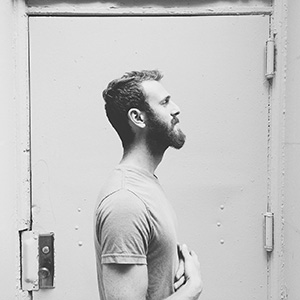

How it works
A normal image is replaced with layers of semi-transparent divisions of the same image. Every layer moves according to the configuration, creating a subtle motion effect.
Hover over the grid images to see how the effect works:
-

Default options:
"extraImgs" : 2,
"opacity" : 0.7,
"bgfixed" : true,
"movement": {
"perspective" : 1000,
"translateX" : -10,
"translateY" : -10,
"translateZ" : 20,
"rotateX" : 2,
"rotateY" : 2,
"rotateZ" : 2
}
-
Options:
"extraImgs" : 4,
"opacity" : 0.5,
"bgfixed" : true,
"movement": {
"perspective" : 500,
"translateX" : -15,
"translateY" : -15,
"translateZ" : 20,
"rotateX" : 15,
"rotateY" : 15
}
-
Options:
"extraImgs" : 2,
"opacity" : 0.7,
"bgfixed" : false,
"movement": {
"perspective" : 1000,
"translateX" : 30,
"translateY" : 30,
"translateZ" : -50,
"rotateX" : 0,
"rotateY" : 0,
"rotateZ" : 10,
}
Options
A normal image is replaced with layers of semi-transparent divisions of the same image. Each layer gets moved in 3D, creating a subtle illusion of perspective.
- extraImgs
-
Number of extra background-image divisions; min:1, max:5
extraImgs : 2
- opacity
-
The opacity value for the background-image divisions
opacity : 0.7
- bgfixed
-
Movement of first layer; by default it's not moving
bgfixed : true
- movement
-
The movemement configuration for each background-image division
movement : { ... }
- perspective
-
The perspective value for the 3D transforms
perspective : 1000
- translateX
-
The relative movement on the x-axis. A positive value will move the background-image divisions in the same direction like the mouse up to the amount defined (in pixel). A negative value reverses the direction, i.e. moves the division into the opposite direction of the mouse.
translateX : -10
- translateY
-
The relative movement on the y-axis.
translateY : -10
- translateZ
-
The relative movement on the z-axis. This specific translation is done when the mouse moves vertically. A perspective value needs to be set.
translateZ : 20
- rotateX
-
The relative rotation on the y-axis. A perspective value needs to be set.
rotateX : 2
- rotateY
-
The relative rotation on the y-axis. A perspective value needs to be set.
rotateY : 2
- rotateZ
-
The relative rotation on the Z-axis. A perspective value needs to be set.
rotateZ : 0
Add the class "tilt-effect" to the respective image. The image container should have an explicit width and height.
To initialize either set the options in "data-tilt-options" or initialize with JavaScript: new TiltFx(element, options)